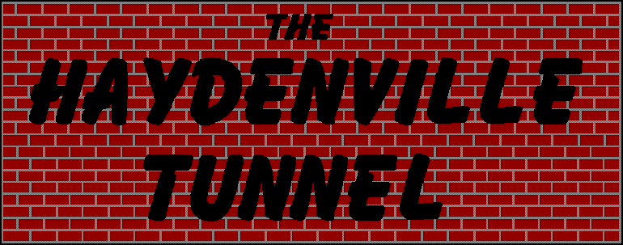
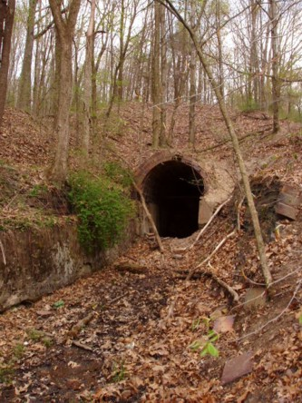
This tunnel runs for nearly a mile beneath a wooded ridge in southeastern Ohio, between a sealed-off mine and a long-demolished manufacturing plant. Its recesses have remained dark and forgotten for decades, and despite the fact that it's still a thriving (sort of) Hocking County town, in a very real sense this derelict corridor through the earth is all that remains of what Haydenville was really all about.
So, before we explore the tunnel...
A Little More About Haydenville, Ohio
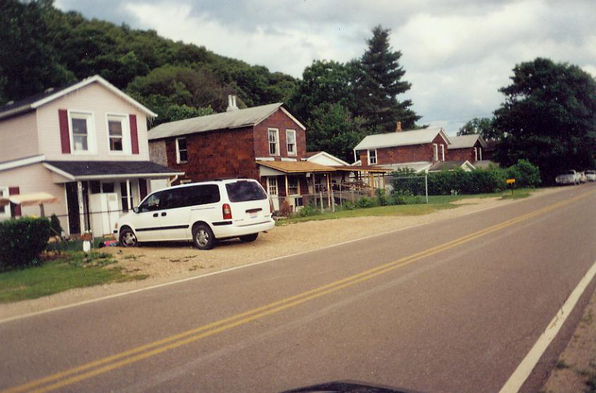
One of southeastern Ohio's many rural curiosities is the village of Haydenville, company town nonpareil. It was founded in 1852 by Columbus entrepreneur Peter Hayden, whose Mining and Manufactuing Company provided Haydenville with every one of its early citizens. The workers built not just their homes but also their church, post office, and general store out of the building material most readily available: the reddish-tan brick they took out of the blast furnaces every day. The oldest parts of Haydenville feature rowhouses crowded along Main Street, all constructed of the same unusually rough, unusually dark crimson brick.
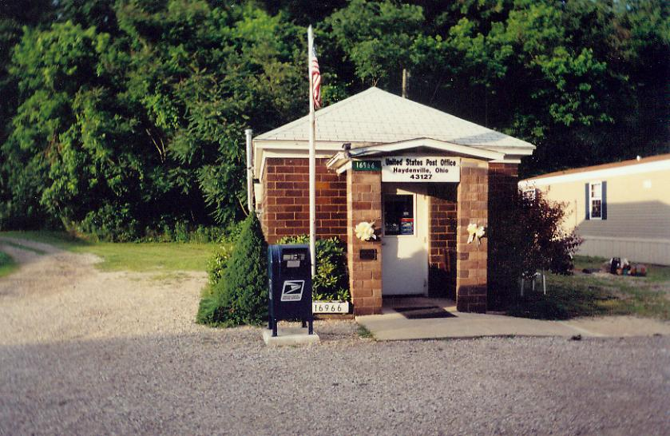
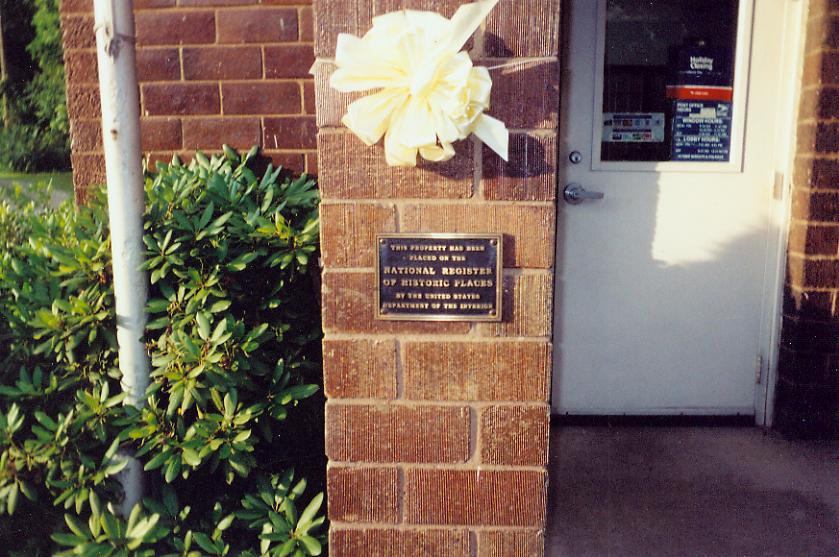
Peter Hayden, owner of a line of canal boats, purchased a charcoal furnace from Hanging Rock, near Ironton, Ohio, and had it moved up the canal to a spot in southeastern Hocking County. Hayden set about buying a controlling interest in Dille, Brice & Moore, renamed it Haydenville Mining and Manufacturing, and put the residents of his company town to work making vitrified ceramic bricks, blocks, tiles, pipes, and fittings. They dug clay from pits along the riverbank and carted it to the factory using the now-abandoned tunnel through the ridge.
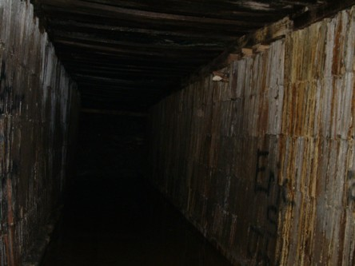
Hayden's company never saw the need to dig its own coal out of the hills. Coal mining has always been a major industry in Appalachia, so there was no difficulty bringing in enough coal to fire Haydenville Furnace. The town was a stop on the Hocking Valley & Toledo Railroad; coal cars regularly pulled onto the tile plant's siding to dump their freight, while passengers boarded at a train station made of the same, familiar glazed brick. Before that the Hocking Valley Canal provided a somewhat slower connection point for coal and other goods, as well as passengers. Parts of both still remain around town; pictured below are the train station, abandoned until recently and being restored, and Haydenville's Lock 17, currently a minor cause célèbre for the Little Cities of Black Diamonds historical preservation group.
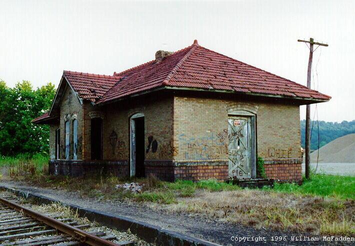
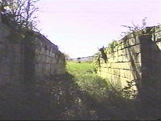
In 1906 ownership of the furnace works shifted to the National Fireproofing Company, which flourished throughout the early part of the twentieth century. They produced a slightly different quality of brick, "decorative and functional," tan with a smoother surface, and houses in Haydenville--still company-owned--started to be built with this stuff. The town's major church, the United Methodist, was built from bricks more commonly seen in industrial drainage channels, with ornamental curlicues of pipe fittings inlaid beneath the eaves. The buildings in town were a catalogue of the factory's brick, block, and tile products. Architecture professors from Ohio University, studying the company homes in the 70s, dubbed it "Sewer Pipe Gothic."
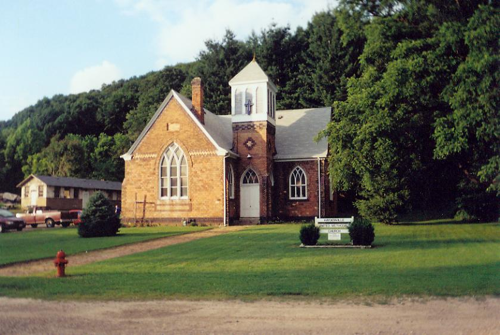
Haydenville United Methodist Church, built 1890
As fascinating as downtown Haydenville is, with its weird uniformity and historic architectural uniqueness (121 of its buildings are on the National Register of Historic Places, including the famous round house, which is shaped like a segment of brick pipe stood on its end), there is nothing particularly "forgotten" about most of it.
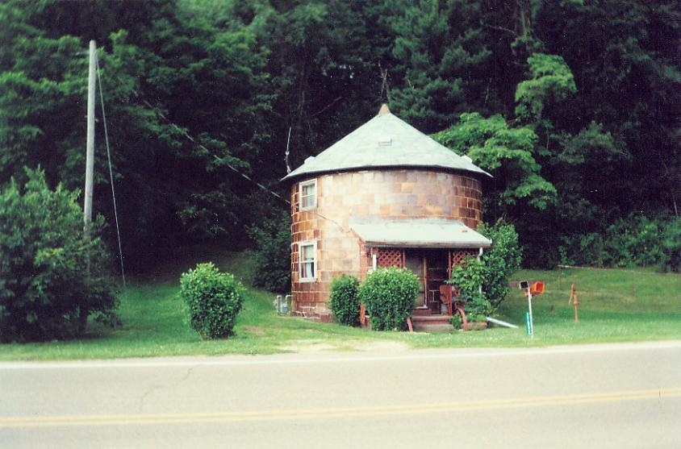
The famous Round House on Haydenville Road
Industry here did well even in the 1930s, when most rural towns with goods-based economies foundered desperately. The same clay mine and brick- and tile-making works employed and produced for nearly eleven decades. Not always ethically, of course; before the labor reforms of the Great Depression, employees often worked as slaves to the "company store," otherwise known as the general store. With no competition, the company could keep prices high for everyday items, and employees--especially those with families--often needed to pay in credit. This was a never-ending cycle of debt that essentially meant the company owned its workers. For more about this, listen to the Tennessee Ernie Ford song "Sixteen Tons."
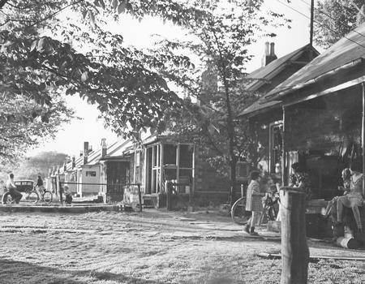
A WPA photo of Haydenville citizens in the 1930s
Even now Haydenville can't by any measure be called a ghost town, since it has retained a population about as well as similar towns nearby--New Straitsville, McArthur, The Plains. New, non-furnace-brick homes have been thrown up around the edges and in the gaps of the old Haydenville, and now many of its residents live in trailers or homes with aluminum siding. Many of them commute to Logan or Athens or Nelsonville to go to work or school. Life goes on in a very ordinary way there.
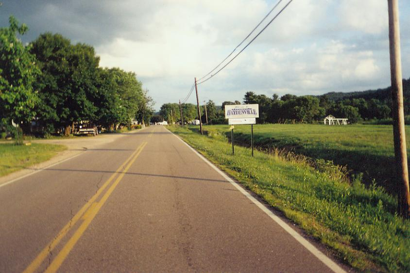
The brick town does have its two hilltop cemeteries with ghostly reputations, Haydenville Cemetery and Wolfe Cemetery. Their legends are interesting enough, though their veracity is dubious in the extreme. A certain brand of American industrial history is written up and down the village's brown-brick streets, enough that it's studied by business, economics, sociology, and history students alike; the Communication school at Ohio University maintained, for a while, an unofficial website for "Ohio's Last Company Town."
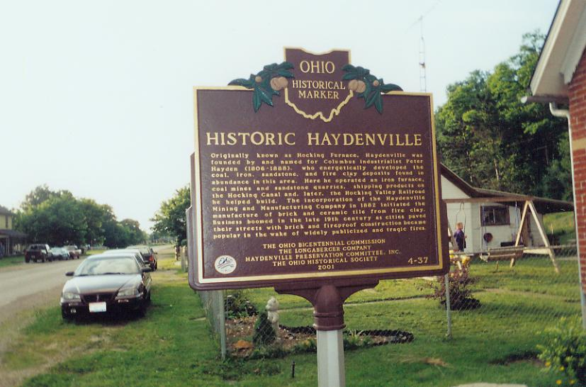
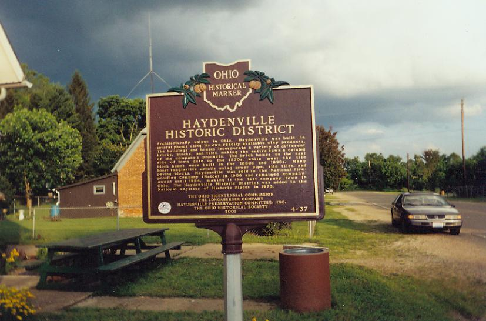
But the one truly forgotten thing in Haydenville is the heart that stopped beating in 1964, when National Fireproofing went under and the town was left to sink or swim on its own. Main Street's tile and brick buildings went on the National Register of Historic Places in 1973, but the factory that built them--the blast furnace and brickmaking plant--was left in ruins.
The Brick and Tile Works and the Clay Mine
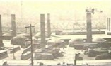
The brick manufacturing plant stood on County Road 25, otherwise known as Haydenville Road, just south of town. The main buildings, including company offices, theater, infirmary, and company store, stood stacked against each other in a single block across the road from the cemetery driveways, but the brick works extended to the other side as well.
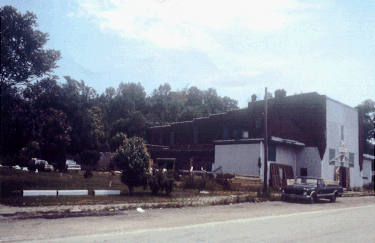
The location was close to a large clay bed called Clay Mine Hollow. Clay was also taken from a small tributary of the Hocking River further north, and it's this more distant pit that the abandoned tunnels was used for; workers moved through it between the mine and the factory, pushing handcarts full of raw clay or returning them to be filled.
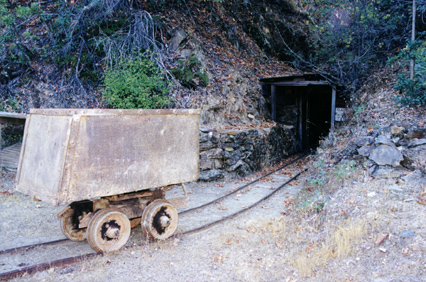
To give you a better idea of the lay of the land in and around Haydenville, here's a TopoMap showing the place where the pallet company is now, as well as the short county roads that lead up the ridge to Haydenville and Wolfe Cemeteries. The tunnel itself isn't shown, but it can be imagined running above the two graveyards.
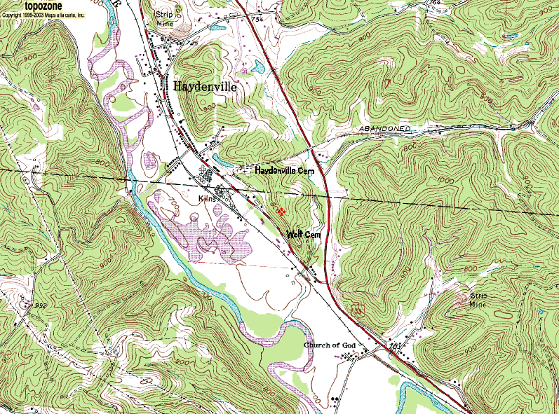
At some point in the 1980s the original company buildings were demolished and the land was put to use by a company that makes wooden pallets. That's what you'll see if you drive south on Haydenville Road, past the place where everyone in town used to work. But if you stop your car and walk into the woods, you'll find the only thing that does remain of the old Haydenville Mining and Manufacturing Co.
Click below to explore the tunnel.
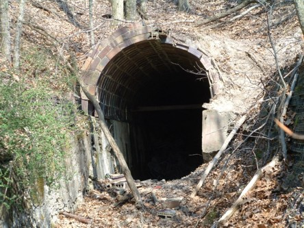
The Tunnel
Haydenville Cemetery
Wolfe Cemetery
Haydenville, OH: A Company Town's Past, Present, & Future
Grave Addiction: The Haydenville Tunnel
Ohio Exploration Society: The Haydenville Tunnel
Ohio Paranormal: Haydenville Investigations
Central Ohio Paranormal Society: Haydenville Clay Tunnel
Dead Ohio Stories: Haydenville Tunnel
The Olde Forester: Haydenville Furnace
Rootsweb: Haydenville, Ohio
Ohio History - OhioPix: Haydenville, Ohio WPA Photographs
Little Cities of Black Diamonds
Back
forgottenohio@yahoo.com